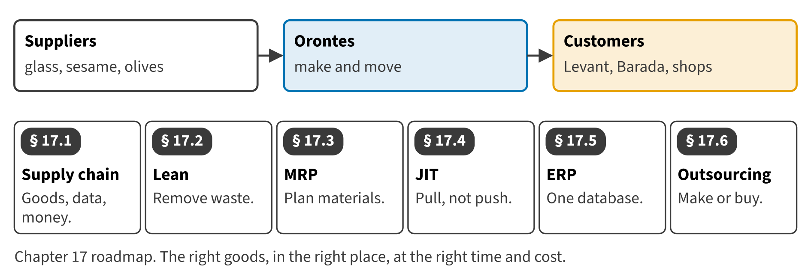

Part III · Costing systems and business processes · Chapter 17
Supply Chain Management: Lean, MRP, JIT, ERP and Outsourcing
إدارة سلسلة الإمداد: الإدارة الرشيقة وتخطيط الاحتياجات والتوقيت المحدد وتخطيط موارد المؤسسة والاستعانة بمصادر خارجية
The Beverages division keeps a month of empty bottles in a rented store, while its supplier, Jordan Glass, is twenty minutes away. The Oils division has been offered a lower price to bottle its olive oil outside. This chapter looks at how Orontes manages the flow of materials, and how to put a price on each change.

Start here
Then
What this chapter is tested on
| LOS | Official statement (ICMA, 2024) | In plain words | Depth here |
|---|---|---|---|
| D.4.a | explain supply chain management | Explain supply chain management. | Full treatment |
| D.4.b | define lean resource management techniques | Define lean resource management techniques. | Full treatment |
| D.4.c | identify and describe the operational benefits of implementing lean resource management techniques | Describe the operational benefits of lean resource management. | Full treatment |
| D.4.d | define material requirements planning (MRP) | Define material requirements planning (MRP). | Full treatment |
| D.4.e | identify and describe the operational benefits of implementing a just-in-time (JIT) system | Describe the operational benefits of a just-in-time (JIT) system. | Full treatment + Extended Example |
| D.4.f | identify and describe the operational benefits of ERP | Describe the operational benefits of ERP. | Full treatment |
| D.4.g | explain the concept of outsourcing and identify the benefits and limitations of choosing this option | Explain outsourcing and its benefits and limitations. | Full treatment |
| D.4.j | calculate the financial impact of implementing the above-mentioned methods | Calculate the financial impact of these methods. | Full treatment + Extended Example |
The official statements are quoted from the ICMA Learning Outcome Statements (effective September 1, 2024). The plain-words column restates them in simpler English. The exam may test any outcome up to Level C.
What you already know
Chapter 14 looked at the value chain inside one company, and Chapters 15 and 16 removed waste from processes. This chapter follows materials across companies and uses relevant costs, as in make-or-buy decisions.
The 11 key terms
Every scene has Check Answers and Try Again. Try Again reshuffles rather than revealing. When you are wrong, the first thing you read is the reason for the option you chose, taken from the book's own explanations. Progress is saved in this browser.